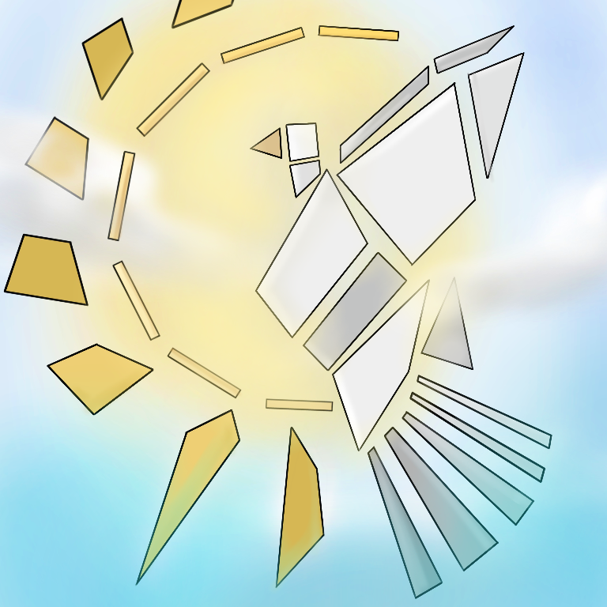
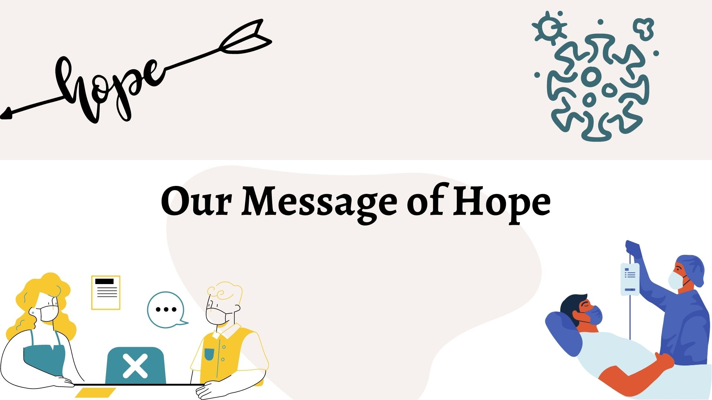

| A WORLD BROUGHT UPON HOPE | |||
|---|---|---|---|
|
Our world must always keep hope in their hearts for a better change. As long as you have life, you have the hope to change darken nights into brighter days. Learn from mistakes of yesterday, live for dreams today, hope for a brighter tomorrow! - Timothy Pina | |||
|
Image of Hope:  2020 has been a chaotic year because a lot of tragic things happened in our world - and one of it is the spread of COVID-19 viruses around the world. Some of us loss something special that make us happy- it may be a person, a pet, opportunity, a specific event, and it is indeed losing hope thinking that it is already gone. We, the L.A.R.C.S Committee are spreading love and giving hope to all of us who are affected by the pandemic. In a small act of kindness we can cheer them up and boost their hope again. Our design is a Bird made up of quadrilateral. Bird symbolizes hope and the unique physical structure of birds with hollow bones, feathers, and light bodies gives them the ability to fly through the open blue sky. When a bird open its wings to soar freely, they let go of all their worries and fly above in the heavens and deliver divine messages to the ones that need them the most. A bird is a reminder for us to keep flying for our dream. All we need to do is slow down, pay attention, and observe the birds. God can send these winged creatures to us with the very thing our hearts are crying for. If we let them, they can be our best form of medication when we are in spiritual pain and heartbroken. |
|||
|
 Our Message of Hope |
|||
| Throughout the years, the world has constantly changed varying on the events and situation they are brought up against. If the world will continue to have hope for the tomorrow of every today, the world will also follow along, bringing a low a path of never-ending cycle of change in how we people live and have fun. This here is a video stating the challenges the world has faced during the year 2020, but despite all of those challenges, everyone's hope still lingers around. Bringing along a world filled with hope |
|||
2020 Year in Review: Covid-19 by Getty Images The Change |
|||